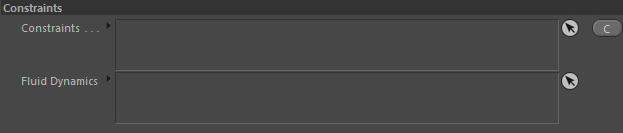
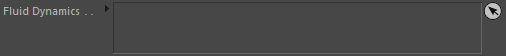

Parameters
Constraints
Constraints

Constraints

Restrict and alter the strength of the resulting emission by using constraints.
Please see Constraints for more information.
Fluid Dynamics

Linking Fluid dynamics here serves two purposes:
1. The particle count in a cell is restricted to 8 particles per cell. This avoids particle clumping especially when it comes down to liquid simulations.
Also the Weak spring uses this 8 particles-per-cell particle density as reference density. The same could be achieved by using a particle count constraint.
2. Particles that would lie outside the maximum container box that the according dynamics node defines are not generated. So only particles inside the simulation domain are emitted.